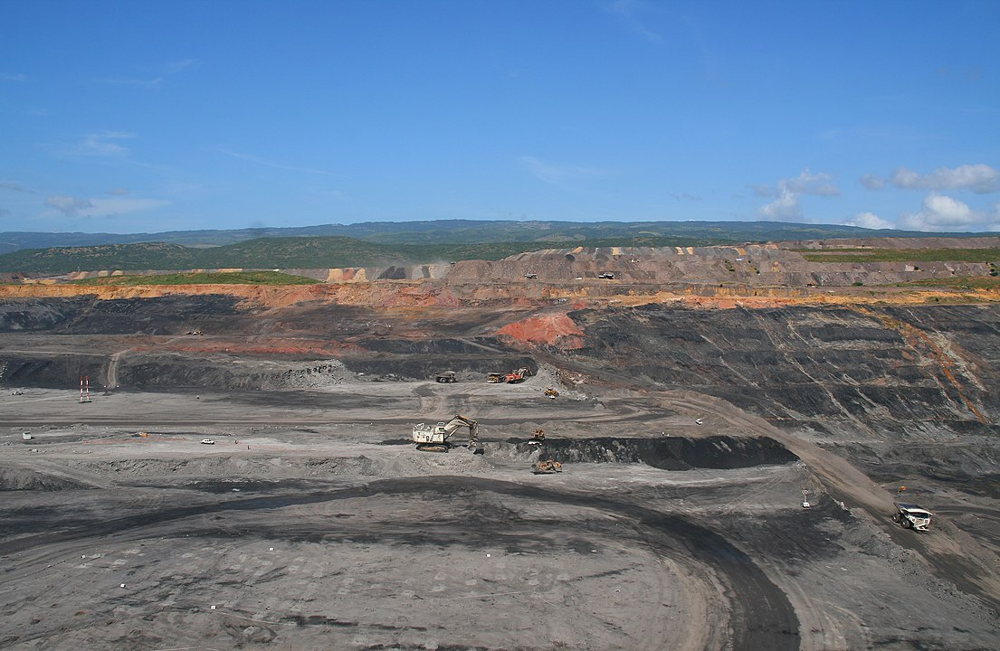
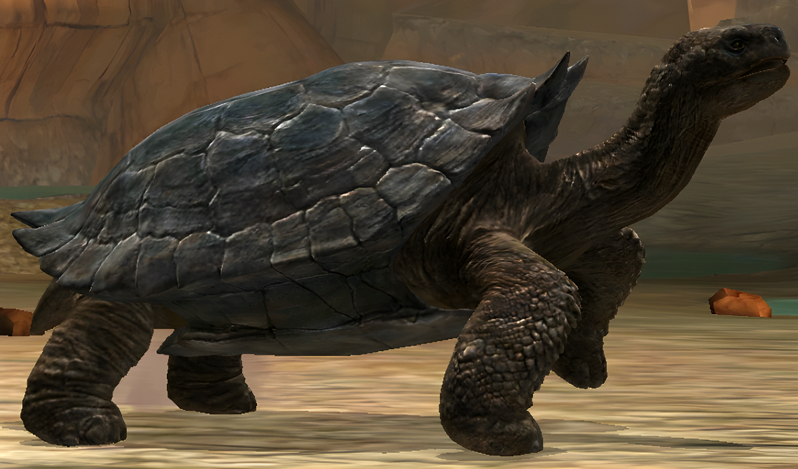
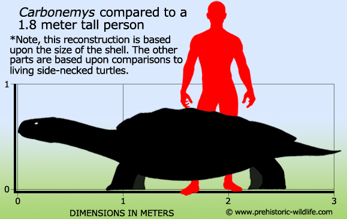
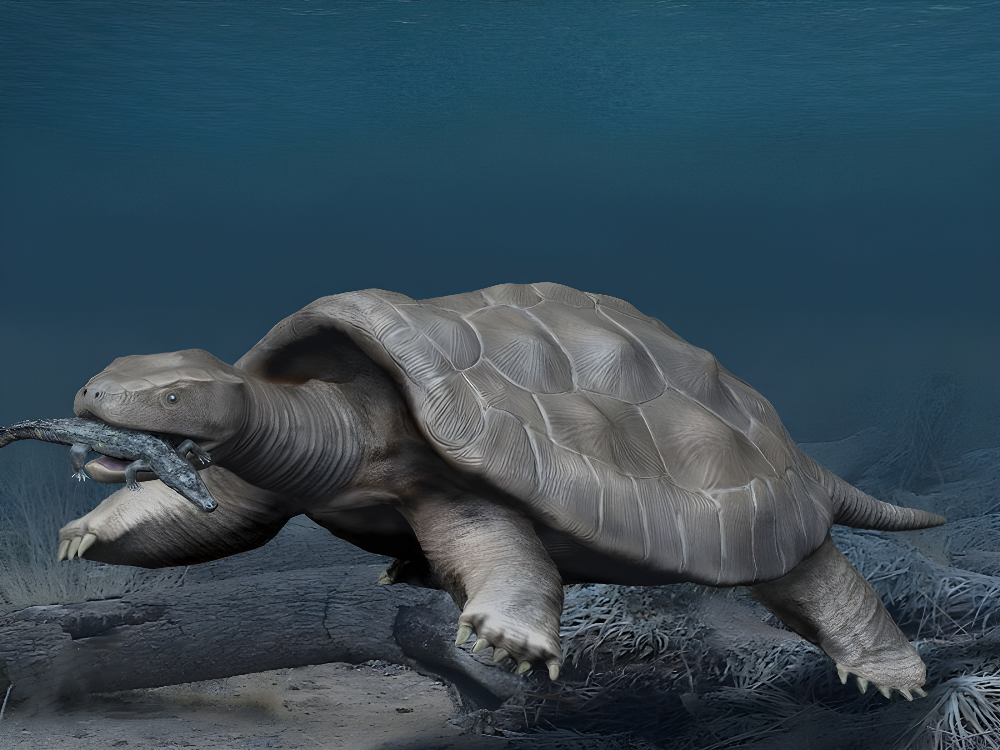
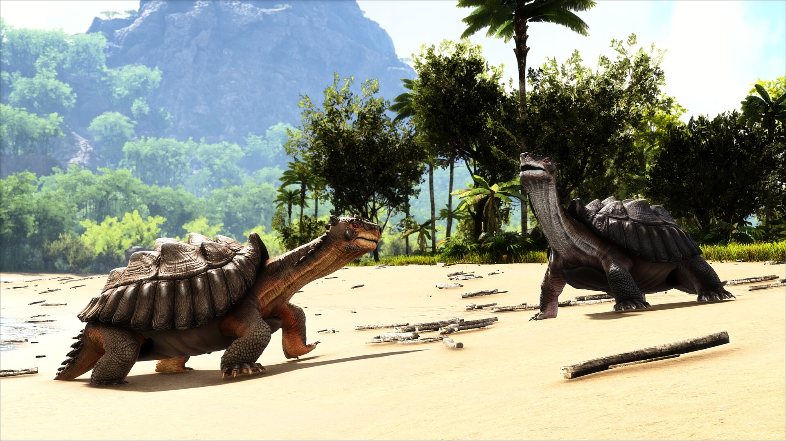

Carbonemys
Rùa Khổng Lồ kỷ Cổ Cận
Tổng quan
Kỷ
Paleogen
Họ
Podocnemididae
Chi
Carbonemys
Dài
3 m
Nặng
1 tấn
Thức ăn

Carbonemys cofrinii là một loài rùa thuộc chi đơn loài Carbonemys đã tuyệt chủng. Đây là loài rùa có kích thước mai dài 1,72 mét, là một trong những loài rùa lớn nhất. Nó đã từng cư trú trên mảnh đất ngày nay là Nam Mỹ trong kỷ Paleogen.
Nguồn: wikipedia.org
Phân bố
Khu vực Nam Mỹ
Thông tin thêm về Carbonemys
Kỷ nguyên và phân bố
Carbonemys đã từng cư trú trên mảnh đất ngày nay là Nam Mỹ cách đây khoảng 60 triệu năm trong giai đoạn Selandian đến Thanetian của kỷ Paleogen, sau thời kỳ tuyệt chủng của khủng long khoảng 5 triệu năm. Hóa thạch loài rùa này đã được phát hiện năm 2005 ở mỏ than phía Đông Bắc Columbia.
Tên khoa học
Được đặt tên bởi bởi Edwin Cadena năm 2012. Carbonemys có nghĩa là “rùa than” liên quan đến nơi mà nó được tìm thấy. Tên loài duy nhất là Carbonemys Cofrinii.
Kích thước
Nếu bạn nhìn kỹ những bức ảnh của Carbonemys, thì bạn sẽ ngay lập tức phát hiện ra rằng con rùa này rất lớn. Trên thực tế, nó có kích thước tương đương một chiếc ô tô nhỏ. Nó có mai dài tới 1,72 mét và hộp sọ dài khoảng 25 cm. Tổng chiều dài khoảng 3 mét và nặng khoảng 1 tấn.
Ngoại hình
Carbonemys là thành viên của Pleurodira, một nhóm hay được biết đến với cái tên 'rùa cổ bên'. Rùa cổ bên có xu hướng có cổ dài hơn tương đối so với các loài rùa khác, điều đó có nghĩa là chúng cũng vậy. dài để thụt vào trong dưới mai.Vì vấn đề này, những con rùa này thay vì uốn cong cổ sang một bên để chúng nằm sát vào cơ thể và dưới gờ của mai (mai trên), do đó có tên là 'rùa cổ bên'. Tuy nhiên, một trong những sự thật quan trọng nhất về Carbonemys không phải là kích thước ấn tượng hay tốc độ, mà đó là sức mạnh của bộ hàm. Các nhà cổ sinh vật học đã suy đoán rằng hàm của loài rùa này đủ khỏe để nghiền nát cả xương.

Chế độ ăn và săn mồi
Dựa vào bộ hàm của Carbonemys, các nhà cổ sinh vật học đã suy đoán rằng chúng có thể không sống bằng trái cây và rau như những con rùa hộp dễ thương ngày nay. Thay vào đó, chúng có thể giống như một con rùa săn mồi khổng lồ chuyên ăn thịt các loài bò sát và động vật có vú nhỏ. Một số nhà cổ sinh vật học thậm chí còn suy đoán rằng nó cũng có thể đã ăn thịt cả cá sấu.
Một trong những nguyên nhân giúp loài rùa này đạt kích thước khổng lồ đến vậy chính là nhờ vào nguồn thức ăn dồi dào, không có nhiều động vật ăn thịt và khí hậu ấm áp cho phép nó duy trì thân nhiệt mà không tiêu tốn quá nhiều năng lượng. Các nhà khoa học cũng cho rằng, loài rùa này chủ yếu săn mồi xung quanh khực vực mình sinh sống mà không di chuyển quá xa để tìm thức ăn.
Những sự thật thú vị
Carbonemys mặc dù khá lớn và ấn tượng, nhưng nó không phải là loài rùa thời tiền sử lớn nhất từng sống. Archelon và Protostega đều là những con rùa lớn hơn nhiều so với Carbonemys, mặc dù cả hai đều sống 5 triệu năm trước khi Carbonemys xuất hiện.
Cũng trong khoảng thời gian Carbonemys sinh sống ở một phần của Nam Mỹ, nơi có rất nhiều loài bò sát khổng lồ sinh sống, chẳng hạn như rắn khổng lồ Titanoboa. Các nhà cổ sinh vật học không chắc liệu hai sinh vật này tránh nhau hay là kẻ thù truyền kiếp. Tuy nhiên, có lẽ khá rõ ràng rằng nếu một cuộc chiến xảy ra giữa Carbonemys và Titanoboa, thì loài rùa khổng lồ này sẽ là kẻ chiến thắng nhờ chiếc mai lớn và bộ hàm mạnh mẽ của nó.